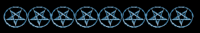

There are four great God powers who rule Hell; Satan, Beelzebub, Astaroth and Azazel. Satan is the most powerful and Ruler over all.
Gods of great rank and power assist only their confidantes and intimate friends. Ea/Enki [Satan], Enlil [Beelzebub; the original 'Baal'], Inanna [Ishtar, Isis, Astaroth] and Shamash/Utu, Ashur [Azazel] were the four most popular, powerful and notable Gods throughout the world. They were the Original Gods of Mesopotamia. All are related. Beelzebub/Enlil is Satan/Ea's half-brother.

THE SIX CHIEF GODS OF HELL:
AGALIAREPT
Rank: General
Agaliarept reveals secrets and unveils mysteries.
His subordinate Demons are: Buer, Gusion and Botis.
Agaliarept wears his jet black hair Egyptian style, shoulder length. He has an olive complexion, and is very tall and strongly built. He is rather quiet.
High Priestess Maxine
ASMODEUS /ASMODAY aka SYDONAY
Rank: King, Manager of the Gambling Houses in Hell.
Asmodeus was of the order of Seraphim and he carries the title "King of the
Demons." He governs the many realms of pleasure.
He prefers to be summoned bareheaded [without a hat or head covering] and he teaches the arts of astronomy, arithmetic, geomancy, and craftsmanship. He answers all questions, discovers and guards treasures and gives the ability to read the thoughts of others. He confers invisibility, and can break up marriages/relationships.
Asmodeus has a human Mother and his Father is a God.
He has jet black hair with a braid down his back, and has an olive complexion. Asmodeus is extremely courteous and very much a gentleman. He is soft spoken with a smooth voice. Asmodeus is a very pleasant Demon.
– High Priestess Maxine
SIGIL
{kind=link}
FLERUTY
Rank: Lieutenant General
Fleruty has the power to perform any labor during the night. He can also cause hail stones to fall in any place.
His subordinate Demons are: Bathin, and Eligos
Fleruty has a golden aura with gold-gilded wings with white feathers. He is muscular with a fair complexion. He has long curly blonde hair that is below his shoulders.
SYMBOL
{kind=link}
LUCIFUGE ROFOCALE
Lucifuge is also known as "Tarchimache" and ”Focalor”[See]
- Rank: King [from him personally to a disciple]
- Candle Color: Black
- Plant: Wild Rose
He has control over all of the wealth and treasures of the world.
His subordinate Demons are Agares, and Margas.
Lucifuge Rofocal assists those who are newly dedicated to Satanism. He is patient, polite, and soft spoken. He has a bald head. He wore a robe of bright shining silver with gold highlights. He is rather quiet. He has a deep voice and a slight accent.
– High Priestess Maxine
SIGIL
{kind=link}
SARGATANAS
Rank: BRIGADIER MAJOR
Sargatanas is directly under Astaroth's command. He can open all locks and transport anyone anywhere through astral projection.
He confers invisibility
and bestows skill at lovemaking.
His subordinate Demons are: Loray, Valefar and Foraii.
Sargatanas has beautiful golden wings and wore a red robe dusted with gold. He has long blonde hair and light blue eyes and fair skin. He was very quiet
– High Priestess Maxine
SATANACHIA
Rank: Commander in Chief
Satanachia has profound knowledge of all the planets. He has power over all women and girls and he provides animal familiars. His subordinate Demons are: Prulas, Amon and Barbatos.
SYMBOL
SIGIL
Artwork by Apollus
{kind=link}
{kind=link}
ABADDON
Abaddon is also known as Apollyon
Rank: Prince of War
Abaddon is an advisor. He is Lord of the Abyss and King of the Demons.
“He is quite large, I would say at least 8 ft tall. He is stocky, wears a type of battle garb when I see him. He is dark looking with a dark complexion, eyes, and hair, along with a moustache.”
ABIGOR
Abigor is also known by the Goetic Demon names of "Eligor” and “Eligos"
Rank: Commander of 60 Legions
Abigor is skilled in secrets of war and prophecy.
Abigor has beautiful black wings with white highlights.
He has a black aura around his head and large black eyes without irises. He also has two black markings like stripes on his cheeks.
SIGIL
{kind=link}
ADRAMELECH
Rank: Grand Chancellor
President of Satan's General Council, Supervisor of Satan's Wardrobe. Adramelech was God of the Avites. These were an ancient people who were brutally massacred to extinction by the Israelites under the direction of "Yaweh."
Adramelech is very tall with jet black hair. His hair is styled with bangs and to the shoulders as seen in many paintings in the Egyptian temples and pyramids. He has very piercing black eyes and an intense stare. He has fair skin.
– High Priestess Maxine
ALASTOR
Executor of Decrees Handed Down by Satan's Court
Alastor has short light blonde hair that is wispy. He has light bluish-grey eyes and looks very young. He has white wings and was clothed in white when I met him.
– High Priestess Maxine
ANUBIS
Anubis is also known as the Goetic Demon "Ipos"
Anubis is a giant. He appears to be between eight feet tall and is very well built. He has straight blonde hair to below his ears and tanned skin. Anubis is the jackal-headed God of the Dead. He assists in matters of the dead. He presides over funerals and can be summoned to protect anyone who has been recently deceased. He is a protector and guide for the souls of the dead.
– High Priestess Maxine
SIGIL
{kind=link}
BEHEMOTH
Rank: Night Watchman
Behemoth presides over all of the feasts and parties in Hell.
- Zodiac Position: 10-20 degrees of Aquarius
- January 30th-February 8th
- Tarot Card: 6 of Swords
- Planet: The Sun
- Metal: Gold
- Element of Air
- Rank: KING
- Belial is a Night Demon and governs 80 legions of spirits
Belial distributes presentations and titles. He reconciles friends and enemies and provides familiars. He helps one get ahead on one's job and to gain a higher position.
He brings favors from others, even one's enemies. Belial was Prince of the Order of Virtues.
Belial is small and thin. He has platinum blonde hair.
SIGIL
{kind=link}
BELPHAGOR
Belphagor is a Demon of ingenious discoveries and wealth.
He bestows wealth on those he likes.
Belphagor has blonde Hair, and a muscular build. He usually leaves one with a warm glow after meeting him. He has white wings and very piercing eyes.
CHARON aka CHIRON
Charon ferries souls across the river Styx into Hell.
CIMERIES aka CIMEJES
**Cimeries is also known as the Egyptian God-"Khepera." He is also known by the names "Kheperi" "Khepri" "Kheprer" and "Chepera"
*He stated to a disciple that he prefers to be addressed as "Khepu"
- Zodiac Position: 25-29 degrees of Aquarius *[20-29 Capricorn]
- February 14th-18th *[Jan 10-19]
- Tarot Card: 7 of Swords *[4 Pentacles]
- Candle color: Dark Blue
- Plant: Pine
- Element: Air *[Earth]
- Planet: Venus *[Moon]
- Metal: Copper *[Silver]
- Rank: MARQUIS
- Cimeries is a night Demon and rules 20 legions of spirits
Cimeries bestows strength in spirit and confers courage. He makes one heroic in battle, teaches literature, and finds anything that is lost. He teaches grammar, logic, and rhetoric and is the patron of soldiers and military personnel. He also discovers buried treasure.
He has beautiful shoulder-length strawberry blonde hair and is well built.
He is a very handsome God with a wide wingspan. His wings are golden. He is covered with gold glitter.
SIGIL
{kind=link}
| Dagon is also known as the GOETIC DEMON "ZAGAN"
Dagon was a God of the Philistines. He is very large like Anubis. He is built like a body builder. He has straight blonde hair, a small mouth with thin lips and bluish-grey piercing eyes. He is a God of agriculture, farming, and fertility. He is the patron of farmers and agriculturalists. There is evidence that he was also worshipped in the Far East in Myanmar/Burma. |
– High Priestess Maxine
SIGIL
{kind=link}
HORUS
Horus is also known as the Goetic Demon "Purson"
He is very fair. He resembles Amon Ra, only he has softer features. He is attended by four other Demons. He is highly respected among the Demons and is very high ranking. Very youthful looking, Horus can light up the entire room with his energy when he appears.
– High Priestess Maxine
SIGIL
{kind=link}
MAMMON [ZEUS]
Rank: Treasurer of Hell
”Mammon" is not his real name. "Mammon" is a Hebrew word for money and nothing more. How this name was applied to a Demon/God was through misinterpretation and ignorance. We found in our workings with the Demons, the Greek God Zeus answers to "Mammon."
Zeus has short platinum blonde hair with waves and very light bluish-grey eyes. He wears a laurel crown, a white toga and is built stocky.
– High Priestess Maxine
MASTEMA
Mastema is an important Demoness from Ancient Egypt. She rules over and is an expert with black magick and sorcery. She has beautiful long blonde shining hair, full of curls and wings of pure gold.
– High Priestess Maxine
MORAX
Morax is also known as Foraii, Forfax, Marax and is the Egyptian Goddess "Maat".
- Zodiac Position: 10-14 degrees of Cancer *[20-29 Libra]
- July 2nd-7th *[Oct 13-22]
- Tarot Card: 3 of Cups *[4 Swords]
- Planets: Mars/Pluto
- Metals: Iron/Plutonium
- Element: Water *[Air]
- Candle color: Red
- Elder
- Rank: Earl/President
- Marax is a Day Demon and rules 30 legions of spirits
Morax teaches astrology, astronomy, the liberal sciences, and the magickal properties of stones and herbs. She also provides familiars. She is the Goddess of order, truth, and justice. She is very respected among the other Demons. She has jet black hair with bangs, an olive complexion and a hair style that appears in Egyptian paintings. She has large white wings and is very tall.
– High Priestess Maxine
SIGIL
{kind=link}
MULCIBER
Rank: Count, Commander of the City Guard of Pandemonium
Mulciber is Beelzebub's second in command He is the architect and engineer of the city known as Pandemonium. He is highly intelligent and is expert at strategy and warfare. He built and designed Satan's Grand Palace.
NEPHTHYS
Nephthys is the Goetic Demoness "Bathin" and is also known as "Nebthet"
Nephthys is the Wife of Set. Like Thoth and Seshat, they often appear together. When Nephthys appears, she is attended by Guardian Demons. She is largely built with lots of long curly blonde hair. Nephthys is very friendly and talkative. She is skilled in magick, knows words of power, and is a healing Goddess. She is also a Goddess of death and like her husband, Set; of Darkness.
– High Priestess Maxine
SIGIL 1
SIGIL 2
{kind=link}
{kind=link}
NERGAL aka HADES aka PLUTO
Nergal is one of the 7 sons of Satan and is the ruler of the Underworld. His wife is Erishkegal. He has power over the dead.
NEBIROS
Nebiros is also known as the Goetic Demon "Neberius aka Cerberus"
Rank: Field Marshall and Inspector General
He has the power to inflict evil on anyone
He teaches the properties of minerals, metals, vegetables and animals. He possesses the art of prediction and is an adept at interacting with the dead
Nebiros has a greenish aura. His color is a rich green.
– High Priestess Maxine
SIGIL
{kind=link}
OSIRIS
Osiris is also known as the Goetic Demon "Orias, Oriax"
Osiris is God of the underworld, death, and resurrection.
He bestows stability, strength, and renewed power after death. Osiris has a deep voice and appears bald with a tattoo on his forehead.
SIGIL
{kind=link}
RAUM
RAUM IS THE EGYPTIAN GOD "KHNUM"
- Zodiac Position: 15-19 degrees of Libra *[1-10 Taurus]
- October 8th-12th *[Apr 21-30]
- Tarot Card: 3 of Sword *[5 Pentacles]
- Planet: Saturn *[Mars]
- Metal: Lead *[Iron]
- Element: Air *[Earth]
- Plant: Thistle
- Candle color: Black
- Rank: Earl
- Raum is a Night Demon and rules 30 legions of spirits
Raum creates love and reconciles enemies. He can destroy a reputation, cities, and/or property. He can take money from another and bring it to the mage.
He is the Egyptian God "Khnum" also known as Khnemu, Khnoumis, Chnemu, Chnum.
He is a ram-headed God. He appears with a brilliant white glow and wears a ram's head mask. He has wings with black and white stripes like a zebra, and he wears Egyptian style clothing. Raum is very generous. He bestows telepathy and the ability to communicate with animals. He is a very friendly God.
SIGIL
{kind=link}
SCIRLIN
Scirlin is the one of the messengers of Hell and can be of assistance in summoning other Demons. He represents the authority of Lucifer.
SEKHET
Sekhet is also known as “Sekhmet,” “Sechmet,” “Sekhait,” “Sekhautet,” “Sekhem” and “Sakhmis”
Sekhet is a Lion Goddess and is known for her power. She is a warrior and honored Goddess of war and battle.
She has long black wings with red stripes. She has very dark skin and blonde hair with ringlets. She has a deep and powerful voice.
SESHAT
Seshat is also known as "Sefkhet-Aabut" and "Sesheta"
Seshat is extremely fair with long light blonde hair with rings of curls. She is extremely beautiful and is the wife of Thoth. She accompanies him and assists him in many projects. She is the Egyptian Goddess of Intellect and is a scribe like her husband. She is the Goddess of Literature and Libraries. She ruled over all of the ancient libraries in Egypt. There are times she fills in for Thoth when he is busy. Those of us who have worked with Thoth and Seshat see them together or sometimes Seshat will come to us in place of her husband who is always extremely busy. Thoth is about the busiest of all the Demons.
– High Priestess Maxine
SET
Set is also known as the Goetic Demon "SITRI,"** Seth, Sethi, Sit, Sut, Sutekh.
Set is the Egyptian Lord of Darkness. He is one of the 7 sons of Satan.
BR>He has a dark complexion and jet-black hair. When I performed energy work on him, at first he had rubbery dark brown wings. When he was freed, they bolted into beautiful soft black feathery wings like a raven. He wears a long black satin robe. He was very kind, soft spoken and left me with a strong energetic feeling of peace. He has beautiful energy. Set's Wife is the Goddess Nephthys. They can sometimes appear together.
– High Priestess Maxine
SIGIL
{kind=link}
SORATH
Sorath is a God of the Sun. He is said to have been Adolf Hitler's Personal Guardian Demon.
Sorath rules the current of energy that deals with the "id", of the human psyche, altered states of consciousness, thought-forms, elementals, the unexplained, unexpected, and the unknown and miracles. Sorath is "The Closer", while Azazel is "The Opener". Sorath The Great God does not like everybody for he is the embodiment of the everlasting black burning Sun alit as night to an everlasting day. His number is seven, and he presides over the Thirteenth Sign of the Zodiac of which there exists only one, and his time is any when the Moon is void of course. He Rules from the North.
The mind is very tricky, especially the part we magicians use. The god portion of the mind can do absolutely anything. Satan trusts his own, and no one else with this power. It will not activate for anyone, and if it does it will do so as a terrifying lesson to those who are without who attempt to harness this power. Sorath presides over the “closer part,” the "unknowable mind" current of energy and is the God over the energy emitted by every Sun in the Universe. He rules the center of magnetism and the factor of life for all, along with photogenes and solar power of all kinds. Sorath stated that all Suns in the Universe affect us, not only our own. Northern fire, the Sun above. Lastly, miracles are not something the Gods cause to happen. The Gods are beyond that. Their world is past the need or understanding of what a miracle is. Miracles come from US. What is a miracle to one may curse another; what is lost can be found by another for example.
– Salem Burke
Sorath is of the Nordic Race of Gods. He is tall, and has light blonde long hair.
-High Priestess Maxine
THOTH also known as “Hermes” [Greek], “Mercury” [Roman], “Tehuti,” “Ningishzidda,” and “Quetzalcoatl” [Central America].
- Zodiac Sign: Gemini- Cancer
- Tarot Card: 3 of Rods
- Planets: Mercury, Moon
- Candle Colors: Silver, Red
- Metal: Mercury
- Element: Air
- Rank: RECORDER OF SCRIPT AND LEGAL DOCUMENTS IN HELL; THE GRAND OFFICE
*The above information was dictated from Thoth, personally.
Thoth is a very high-ranking and important Demon. He is one of the 7 sons of Satan. He is the most brilliant and intellectual of the Gods. He is very likable, extremely charismatic, and friendly. He is the busiest of all of the Demons and it can be difficult to get him to appear in a summoning unless one is of importance to him. His wife is Seshat. She often fills in for him when he cannot be present.
Thoth is the True Father of healing and medicine. He is a Patron of doctors, nurses, paramedics, hospital workers, healers, and all of those who work in the medical profession.
All of us who have seen and interacted with Thoth agree he is tall, muscular, very well built with thick golden blonde hair and blue eyes. He is fair skinned. He wears his hair combed back and in a braid like Asmodeus, both have hair past their shoulders.

Back to Demons, the Gods of Hell
© Copyright 2002, 2003, 2004, 2005, 2006, 2015, Joy of Satan Ministries;
Library of Congress Number: 12-16457